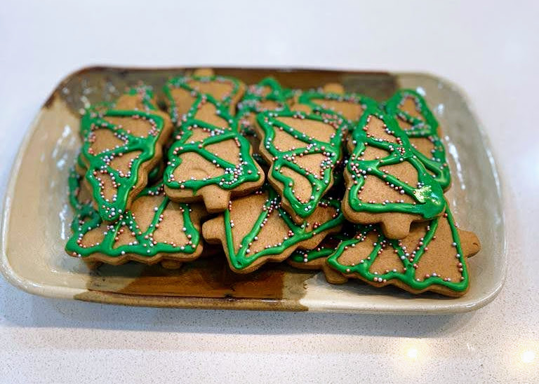
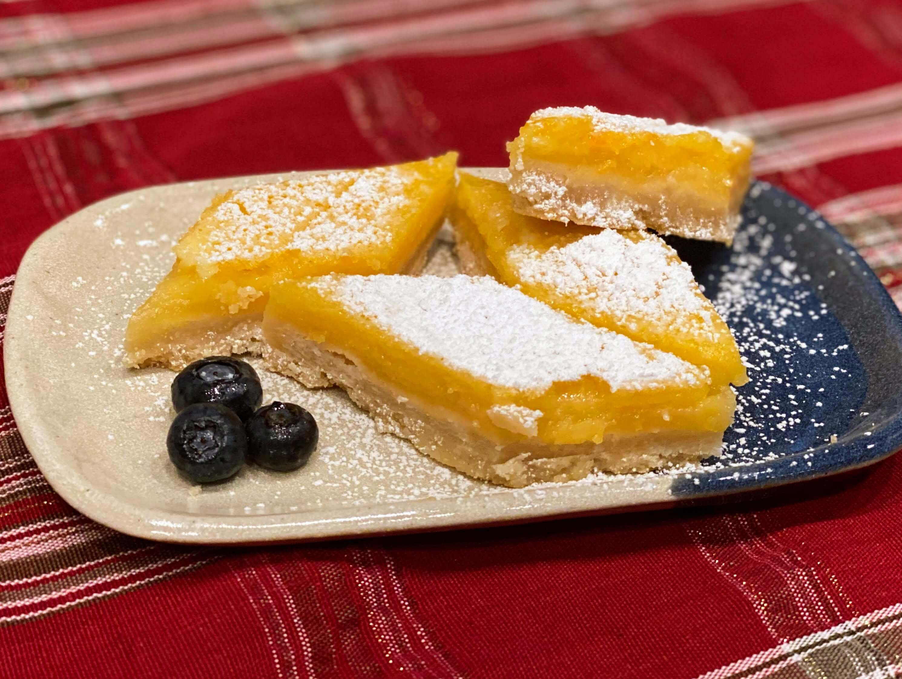

|  |
Gingerbread Cookies are great this time of year! Just imagine, relaxing on the couch, watching a holiday movie, and enjoying a nice cup of hot cocoa,
all while munching on these freshly-baked festive treats. Well, now you can! The following recipe was derived and adapted from one of my favourite baking websites, Sally's Baking Addiction.
These cookies are full of texture and flavour, and are like little Christmas presents that everyone can enjoy. I can guarantee that, when your cookies are ready to eat, they are sure to be crowd pleaser. |
|  |
I don't know about you, but I love lemon bars. The citrusy curd combines perfectly with its buttery and flakey shortbread cookie-crust, which breaks and crumbles with each bite. This recipe is the ultimate lemon bar recipe and the perfect dessert for bringing to parties. They are classy and elegant, while also casual and something you can be proud of making. I made these a while back, and I have wanted to make them again ever since. But, for now, I will teach you how to make these Lemon Bars, so that you can learn to love them as much as I do. |
Answer These Christmas Riddles to Find the Password and Get a Secret, Bonus Recipe!The Last Letter Of Each Answer Forms the Hidden Code:
|